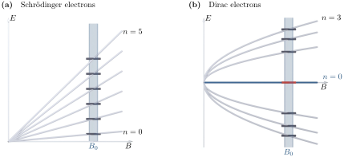

Advanced Quantum Materials 2027 · All lectures · Lecture notes
Session 4. Electrons in a Magnetic Field, Quantum Hall Effect and Landau Levels
4.10 Landau levels of Dirac electrons
Now we repeat the same calculation for a Dirac Hamiltonian, \(H_0 = v_F(p_x\sigma_x+p_y\sigma_y)\), which is the low-energy effective description of graphene near the \(K\) point. With the same minimal coupling and the same Landau gauge, \(\pi_x=p_x\), \(\pi_y=p_y-Bx\), the Hamiltonian is now an off-diagonal \(2\times2\) matrix,
\[H = v_F\begin{pmatrix}0 & \pi_x-i\pi_y\\ \pi_x+i\pi_y & 0\end{pmatrix}.\]
The matrix \(H\) is not diagonal and we cannot solve it by inspection, but its square is. We introduce the magnetic length \(\ell_B=\sqrt{\hbar/B}\) and the ladder operators \(a = \frac{\ell_B}{\sqrt{2}\hbar}(\pi_x+i\pi_y)\) and \(a^\dagger=\frac{\ell_B}{\sqrt{2}\hbar}(\pi_x-i\pi_y)\). Since \([\pi_x,\pi_y]=i\hbar^2/\ell_B^2\), these operators satisfy the ordinary bosonic commutation relation \([a,a^\dagger]=1\). In terms of \(a,a^\dagger\) we have
\[H = \frac{\sqrt{2}\hbar v_F}{\ell_B}\begin{pmatrix}0 & a^\dagger\\ a & 0\end{pmatrix} \quad\Longrightarrow\quad H^2 = \frac{2\hbar^2v_F^2}{\ell_B^2}\begin{pmatrix}a^\dagger a & 0\\ 0 & aa^\dagger\end{pmatrix} = \frac{2\hbar^2v_F^2}{\ell_B^2}\begin{pmatrix}N & 0\\ 0 & N+1\end{pmatrix},\]
where \(N=a^\dagger a\) is the number operator of the harmonic oscillator. This is the statement in the transcript that \(H^2\) has the form “\(p^2+B^2x^2+\text{const}\), which looks like a harmonic oscillator”. Since \(H^2\) is diagonal and has the form of a harmonic oscillator, its eigenvalues are \(2\hbar^2v_F^2 n/\ell_B^2\) for \(n=0,1,2,\dots\), and the energy itself is the square root,
\[E_n = \text{sgn}(n)\, v_F\sqrt{2\hbar B|n|}, \qquad n = 0,\pm1,\pm2,\dots, \tag{4.7}\]
with a real mode at exactly zero energy for \(n=0\). For this mode the lower spinor component vanishes identically, so there is no partner state to pair it with. This is the origin of the \(\sqrt{B}\) scaling in graphene. The spectrum is the square root of a harmonic-oscillator spectrum and not the spectrum itself, so both the dependence on the field and the level spacing change their behavior. For Schrödinger electrons the levels are equally spaced and grow linearly, while for Dirac electrons the levels are spaced as \(\sqrt{n}\) and grow as \(\sqrt{B}\), and this is the reason why, at the same field, the Landau levels of graphene are roughly two orders of magnitude higher in energy than the ones of a GaAs 2DEG. Figure 4.4 shows how the two ladders move with the field, linearly in one case and as a square root in the other, with the ladder at one field as a cut through each fan, including the zero mode, which has no counterpart at all in the Schrödinger case.

The field of a graphene sample is multiplied by 9. By which factor does the energy of the first Landau level above zero change?
Show the answers
- A. ✗ False
This is false. The first level is \(E_1\approx36\,\mathrm{meV}\) at 1 T and \(109\,\mathrm{meV}\) at 9 T. It grows with the field.
- B. ✗ False
This is false. A factor 9 is the law of the parabolic band, where \(\hbar\omega_c\propto B\). For graphene it would give \(327\,\mathrm{meV}\) at 9 T, and not the \(109\,\mathrm{meV}\) of the square-root law.
- C. ✓ True
This is true. The energy (4.7) is proportional to \(\sqrt{|n|B}\), so a factor 9 in the field gives a factor 3 in the energy.
Notebook check-in: session4.ipynb, “The dispersion of the square lattice” (Reminder), “Bands in the conventional quantum Hall state” (Reminder), “Landau levels of conventional electrons” (Core), “Magnetic field dependence of Landau levels” (Core), and “Imaging the magnetic field dependence in the Landau levels” (Core), together with “The dispersion of the honeycomb lattice” (Reminder), “Bands in the Dirac quantum Hall state” (Reminder), “Landau levels of the Dirac equation” (Core), “Magnetic field dependence of Dirac Landau levels” (Core), and “Imaging the magnetic field dependence in the Dirac Landau levels” (Core)
Build a ribbon of the square lattice, which has a parabolic band bottom, and an armchair ribbon of the honeycomb lattice, which has a Dirac cone, with the Peierls substitution (4.4) switched on, and check both spectra directly. For the square lattice you should find equally spaced flat Landau levels that grow linearly in \(B\), as in (4.6), and for the honeycomb lattice levels with unequal spacing that grow as \(\sqrt{B}\), as in (4.7). The “imaging” sections let you follow the energy of each level as a function of the field strength, which is the most direct numerical check of the linear and square-root scaling that we derived above.
At a fixed field, what is the ratio \(E_4/E_1\) of the Dirac Landau levels of (4.7)?
Show the answers
- A. ✗ False
This is false. This is the ratio of a linear ladder with no offset. With \(E_1=36\,\mathrm{meV}\) at 1 T it would give \(E_4=145\,\mathrm{meV}\), while the square-root law gives \(73\,\mathrm{meV}\).
- B. ✓ True
This is true. The levels go as \(\sqrt{n}\), so \(E_4/E_1=\sqrt{4}=2\).
- C. ✗ False
This is false. This would need \(E_n\propto n^2\). With \(E_1=36\,\mathrm{meV}\) it gives \(E_4=580\,\mathrm{meV}\) at 1 T, which is far above the \(73\,\mathrm{meV}\) of (4.7).
Try it. Run the cell for B = 0.005, 0.01, 0.02. Read the position of the first peak above zero energy in each panel. From the first panel to the last the field grows by a factor 4. The peak moves by a factor close to 2, as in (4.7).